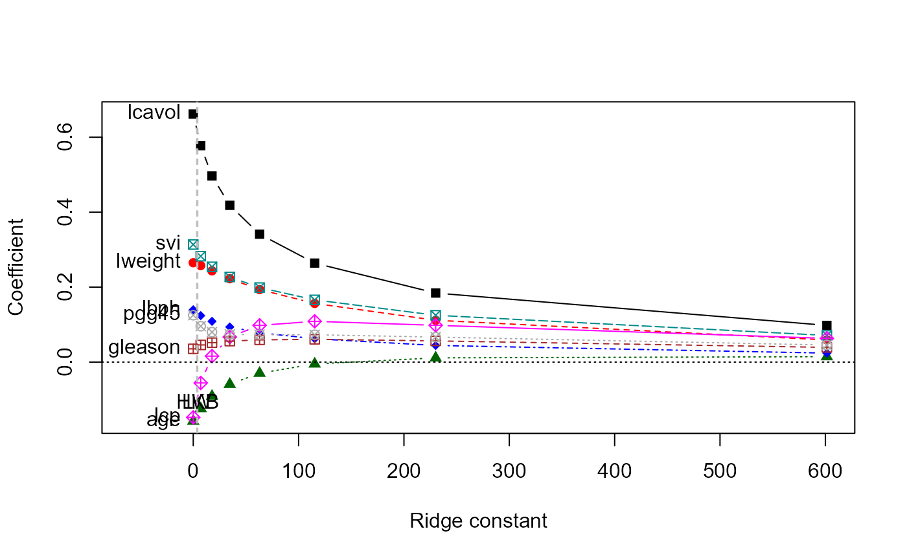
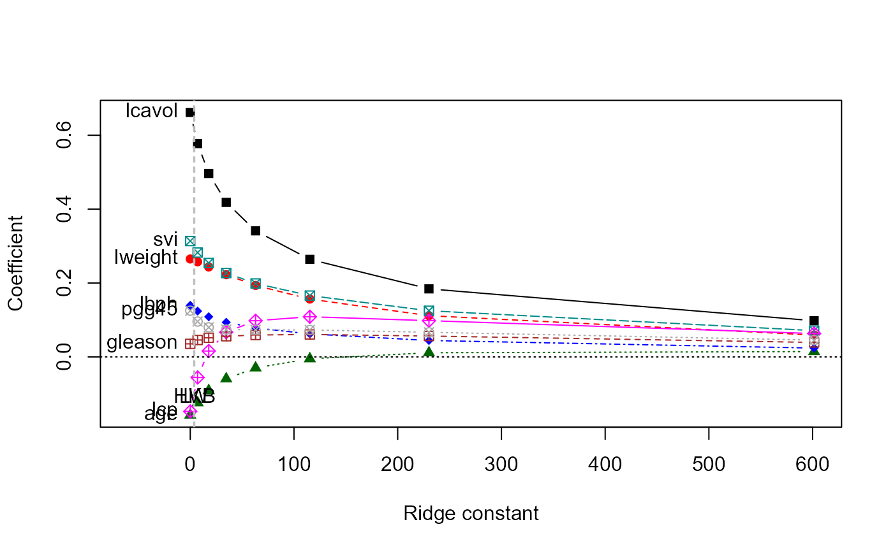
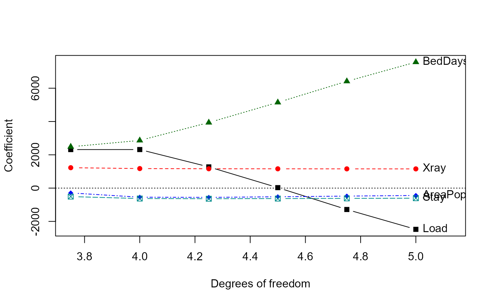
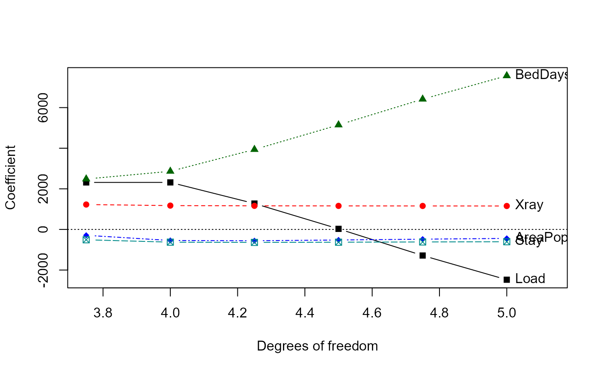
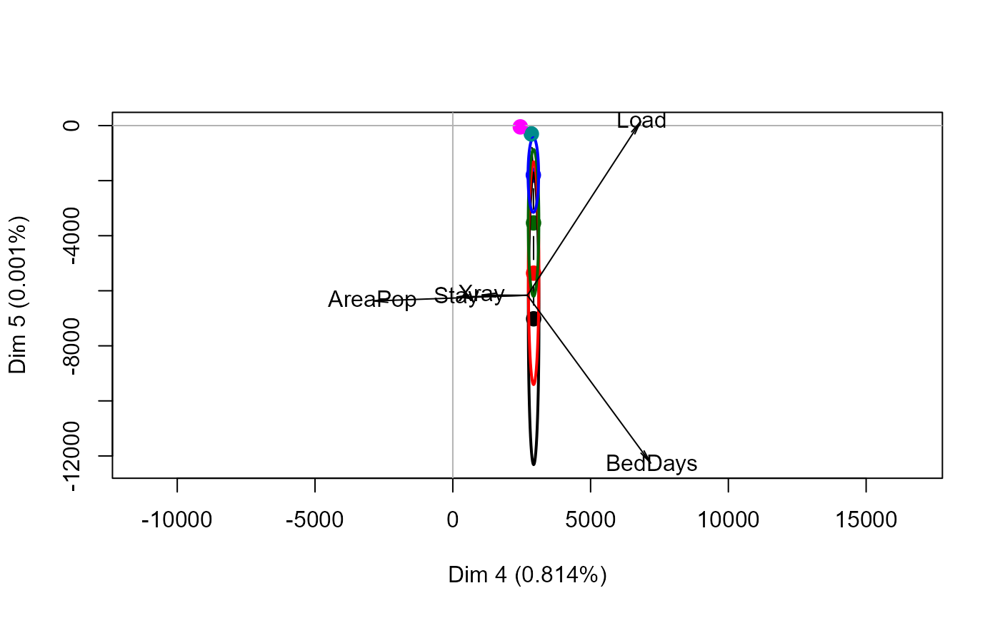
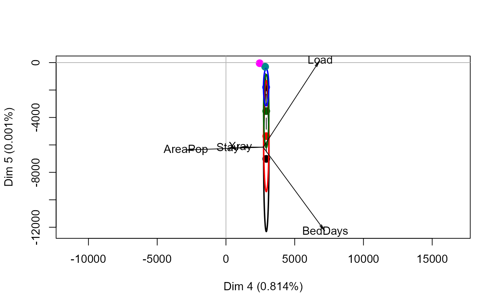

The function ridge fits linear models by ridge regression, returning
an object of class ridge designed to be used with the plotting
methods in this package.
Ridge regression shrinkage can be parameterized in several ways. If a vector
of lambda values is supplied, these are used directly in the ridge
regression computations. Otherwise, if a vector df is supplied the
equivalent values of lambda. In either case, both lambda and
df are returned in the ridge object, but the rownames of the
coefficients are given in terms of lambda.
Usage
ridge(y, ...)
# S3 method for formula
ridge(formula, data, lambda = 0, df, svd = TRUE, ...)
# S3 method for default
ridge(y, X, lambda = 0, df, svd = TRUE, ...)
# S3 method for ridge
coef(object, ...)
# S3 method for ridge
print(x, digits = max(5, getOption("digits") - 5), ...)
# S3 method for ridge
vcov(object, ...)Arguments
- y
A numeric vector containing the response variable. NAs not allowed.
- ...
Other arguments, passed down to methods
- formula
For the
formulamethod, a two-sided formula.- data
For the
formulamethod, data frame within which to evaluate the formula.- lambda
A scalar or vector of ridge constants. A value of 0 corresponds to ordinary least squares.
- df
A scalar or vector of effective degrees of freedom corresponding to
lambda- svd
If
TRUEthe SVD of the centered and scaledXmatrix is returned in theridgeobject.- X
A matrix of predictor variables. NA's not allowed. Should not include a column of 1's for the intercept.
- x, object
An object of class
ridge- digits
For the
printmethod, the number of digits to print.
Value
A list with the following components:
- lambda
The vector of ridge constants
- df
The vector of effective degrees of freedom corresponding to
lambda- coef
The matrix of estimated ridge regression coefficients
- scales
scalings used on the X matrix
- kHKB
HKB estimate of the ridge constant
- kLW
L-W estimate of the ridge constant
- GCV
vector of GCV values
- kGCV
value of
lambdawith the minimum GCV
If svd==TRUE, the following are also included:
- svd.D
Singular values of the
svdof the scaled X matrix- svd.U
Left singular vectors of the
svdof the scaled X matrix. Rows correspond to observations and columns to dimensions.- svd.V
Right singular vectors of the
svdof the scaled X matrix. Rows correspond to variables and columns to dimensions.
References
Hoerl, A. E., Kennard, R. W., and Baldwin, K. F. (1975), "Ridge Regression: Some Simulations," Communications in Statistics, 4, 105-123.
Lawless, J.F., and Wang, P. (1976), "A Simulation Study of Ridge and Other Regression Estimators," Communications in Statistics, 5, 307-323.
See also
lm.ridge for other implementations of ridge
regression
traceplot, plot.ridge,
pairs.ridge, plot3d.ridge, for 1D, 2D, 3D plotting methods
pca.ridge, biplot.ridge,
biplot.pcaridge for views in PCA/SVD space
precision.ridge for measures of shrinkage and precision
Examples
#\donttest{
# Longley data, using number Employed as response
longley.y <- longley[, "Employed"]
longley.X <- data.matrix(longley[, c(2:6,1)])
lambda <- c(0, 0.005, 0.01, 0.02, 0.04, 0.08)
lridge <- ridge(longley.y, longley.X, lambda=lambda)
# same, using formula interface
lridge <- ridge(Employed ~ GNP + Unemployed + Armed.Forces + Population + Year + GNP.deflator,
data=longley, lambda=lambda)
#> Warning: non-list contrasts argument ignored
coef(lridge)
#> GNP Unemployed Armed.Forces Population Year GNP.deflator
#> 0.000 -3.4471925 -1.827886 -0.6962102 -0.34419721 8.431972 0.15737965
#> 0.005 -1.0424783 -1.491395 -0.6234680 -0.93558040 6.566532 -0.04175039
#> 0.010 -0.1797967 -1.361047 -0.5881396 -1.00316772 5.656287 -0.02612152
#> 0.020 0.4994945 -1.245137 -0.5476331 -0.86755299 4.626116 0.09766305
#> 0.040 0.9059471 -1.155229 -0.5039108 -0.52347060 3.576502 0.32123994
#> 0.080 1.0907048 -1.086421 -0.4582525 -0.08596324 2.641649 0.57025165
# standard trace plot
traceplot(lridge)
# plot vs. equivalent df
traceplot(lridge, X="df")
 pairs(lridge, radius=0.5)
#}
# \donttest{
data(prostate)
py <- prostate[, "lpsa"]
pX <- data.matrix(prostate[, 1:8])
pridge <- ridge(py, pX, df=8:1)
pridge
#> Ridge Coefficients:
#> lcavol lweight age lbph svi
#> 0.00000 0.6617092 0.2651031 -0.1573777 0.1395860 0.3136993
#> 7.08544 0.5774912 0.2574888 -0.1240459 0.1239824 0.2825540
#> 17.80389 0.4966273 0.2435259 -0.0910692 0.1087544 0.2542261
#> 34.68940 0.4182786 0.2224269 -0.0591493 0.0936983 0.2271752
#> 62.98554 0.3413151 0.1935614 -0.0296600 0.0784146 0.1988651
#> 115.28893 0.2641305 0.1565931 -0.0049775 0.0622832 0.1660546
#> 230.11308 0.1842675 0.1116128 0.0112850 0.0444562 0.1249585
#> 601.44017 0.0979221 0.0591504 0.0144649 0.0239578 0.0711874
#> lcp gleason pgg45
#> 0.00000 -0.1475193 0.0353655 0.1250701
#> 7.08544 -0.0556184 0.0457910 0.0958079
#> 17.80389 0.0159166 0.0518160 0.0800300
#> 34.68940 0.0670223 0.0559538 0.0738953
#> 62.98554 0.0979877 0.0592922 0.0732073
#> 115.28893 0.1087550 0.0607835 0.0729838
#> 230.11308 0.0981548 0.0564920 0.0666687
#> 601.44017 0.0633002 0.0392473 0.0455834
plot(pridge)
pairs(pridge)
pairs(lridge, radius=0.5)
#}
# \donttest{
data(prostate)
py <- prostate[, "lpsa"]
pX <- data.matrix(prostate[, 1:8])
pridge <- ridge(py, pX, df=8:1)
pridge
#> Ridge Coefficients:
#> lcavol lweight age lbph svi
#> 0.00000 0.6617092 0.2651031 -0.1573777 0.1395860 0.3136993
#> 7.08544 0.5774912 0.2574888 -0.1240459 0.1239824 0.2825540
#> 17.80389 0.4966273 0.2435259 -0.0910692 0.1087544 0.2542261
#> 34.68940 0.4182786 0.2224269 -0.0591493 0.0936983 0.2271752
#> 62.98554 0.3413151 0.1935614 -0.0296600 0.0784146 0.1988651
#> 115.28893 0.2641305 0.1565931 -0.0049775 0.0622832 0.1660546
#> 230.11308 0.1842675 0.1116128 0.0112850 0.0444562 0.1249585
#> 601.44017 0.0979221 0.0591504 0.0144649 0.0239578 0.0711874
#> lcp gleason pgg45
#> 0.00000 -0.1475193 0.0353655 0.1250701
#> 7.08544 -0.0556184 0.0457910 0.0958079
#> 17.80389 0.0159166 0.0518160 0.0800300
#> 34.68940 0.0670223 0.0559538 0.0738953
#> 62.98554 0.0979877 0.0592922 0.0732073
#> 115.28893 0.1087550 0.0607835 0.0729838
#> 230.11308 0.0981548 0.0564920 0.0666687
#> 601.44017 0.0633002 0.0392473 0.0455834
plot(pridge)
pairs(pridge)
 traceplot(pridge)

traceplot(pridge, X="df")
# }
# Hospital manpower data from Table 3.8 of Myers (1990)
data(Manpower)
str(Manpower)
#> 'data.frame': 17 obs. of 6 variables:
#> $ Hours : num 567 697 1033 1604 1611 ...
#> $ Load : num 15.6 44 20.4 18.7 49.2 ...
#> $ Xray : int 2463 2048 3940 6505 5723 11520 5779 5969 8461 20106 ...
#> $ BedDays: num 473 1340 620 568 1498 ...
#> $ AreaPop: num 18 9.5 12.8 36.7 35.7 ...
#> $ Stay : num 4.45 6.92 4.28 3.9 5.5 4.6 5.62 5.15 6.18 6.15 ...
mmod <- lm(Hours ~ ., data=Manpower)
vif(mmod)
#> Load Xray BedDays AreaPop Stay
#> 9597.570761 7.940593 8933.086501 23.293856 4.279835
# ridge regression models, specified in terms of equivalent df
mridge <- ridge(Hours ~ ., data=Manpower, df=seq(5, 3.75, -.25))
#> Warning: non-list contrasts argument ignored
vif(mridge)
#> Load Xray BedDays AreaPop Stay
#> 0.0000000000 9597.570762 7.940593 8933.086501 23.293856 4.279835
#> 0.0002836352 5602.507260 7.927390 5215.176404 19.045017 3.923247
#> 0.0009043689 2438.603928 7.912946 2270.761610 15.667945 3.638481
#> 0.0026667276 634.529233 7.890568 591.831974 13.699280 3.467754
#> 0.0203643899 23.623930 7.715258 23.249737 12.530582 3.312552
#> 0.1364900421 7.336948 6.733109 8.136369 9.838466 2.795880
# univariate ridge trace plots
traceplot(mridge)
traceplot(pridge)

traceplot(pridge, X="df")
# }
# Hospital manpower data from Table 3.8 of Myers (1990)
data(Manpower)
str(Manpower)
#> 'data.frame': 17 obs. of 6 variables:
#> $ Hours : num 567 697 1033 1604 1611 ...
#> $ Load : num 15.6 44 20.4 18.7 49.2 ...
#> $ Xray : int 2463 2048 3940 6505 5723 11520 5779 5969 8461 20106 ...
#> $ BedDays: num 473 1340 620 568 1498 ...
#> $ AreaPop: num 18 9.5 12.8 36.7 35.7 ...
#> $ Stay : num 4.45 6.92 4.28 3.9 5.5 4.6 5.62 5.15 6.18 6.15 ...
mmod <- lm(Hours ~ ., data=Manpower)
vif(mmod)
#> Load Xray BedDays AreaPop Stay
#> 9597.570761 7.940593 8933.086501 23.293856 4.279835
# ridge regression models, specified in terms of equivalent df
mridge <- ridge(Hours ~ ., data=Manpower, df=seq(5, 3.75, -.25))
#> Warning: non-list contrasts argument ignored
vif(mridge)
#> Load Xray BedDays AreaPop Stay
#> 0.0000000000 9597.570762 7.940593 8933.086501 23.293856 4.279835
#> 0.0002836352 5602.507260 7.927390 5215.176404 19.045017 3.923247
#> 0.0009043689 2438.603928 7.912946 2270.761610 15.667945 3.638481
#> 0.0026667276 634.529233 7.890568 591.831974 13.699280 3.467754
#> 0.0203643899 23.623930 7.715258 23.249737 12.530582 3.312552
#> 0.1364900421 7.336948 6.733109 8.136369 9.838466 2.795880
# univariate ridge trace plots
traceplot(mridge)
 traceplot(mridge, X="df")

# \donttest{
# bivariate ridge trace plots
plot(mridge, radius=0.25, labels=mridge$df)
pairs(mridge, radius=0.25)
traceplot(mridge, X="df")

# \donttest{
# bivariate ridge trace plots
plot(mridge, radius=0.25, labels=mridge$df)
pairs(mridge, radius=0.25)
 # 3D views
# ellipsoids for Load, Xray & BedDays are nearly 2D
plot3d(mridge, radius=0.2, labels=mridge$df)
# variables in model selected by AIC & BIC
plot3d(mridge, variables=c(2,3,5), radius=0.2, labels=mridge$df)
# plots in PCA/SVD space
mpridge <- pca(mridge)
traceplot(mpridge, X="df")
biplot(mpridge, radius=0.25)

#> Vector scale factor set to 8774.365
# }
# 3D views
# ellipsoids for Load, Xray & BedDays are nearly 2D
plot3d(mridge, radius=0.2, labels=mridge$df)
# variables in model selected by AIC & BIC
plot3d(mridge, variables=c(2,3,5), radius=0.2, labels=mridge$df)
# plots in PCA/SVD space
mpridge <- pca(mridge)
traceplot(mpridge, X="df")
biplot(mpridge, radius=0.25)

#> Vector scale factor set to 8774.365
# }